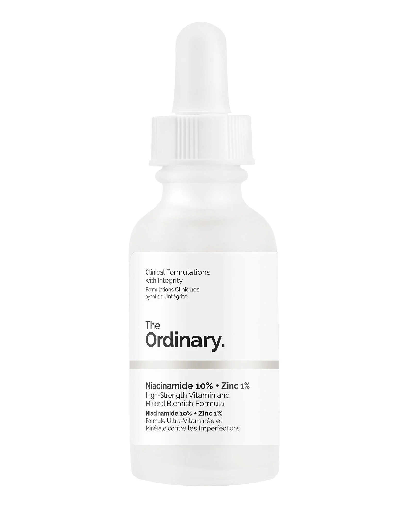

Cosmetime
Save your precious
Time.
Thank you for compleating our test!

Here are your test results!
Your skin is unique, and we recognise that it is important for your products to adhere to that.
The areas around your cheekbones and forehead are dry, so the products you use must include hydrating ingredients. However, your nose and mouth areas are more oily - we recommend you refrain from certain dairy products and apply night creams that will not agitate your skin.
These are the products we reccomend based on your answers to the test!

The Ordinary Niacinamide 10% + Zinc 1% Serum
30ml
More info

La Roche-Posay Toleriane Double Repair Matte Moisturizer
75ml
More info